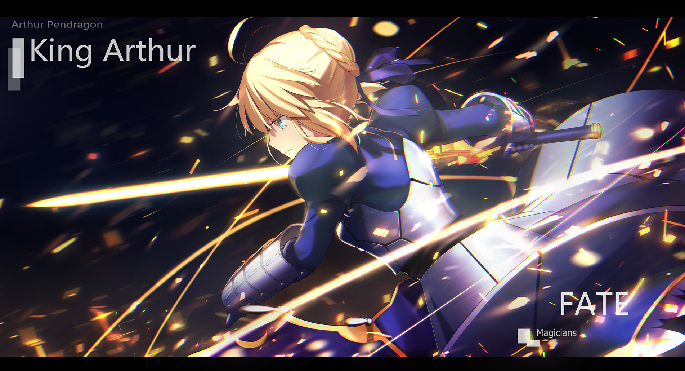
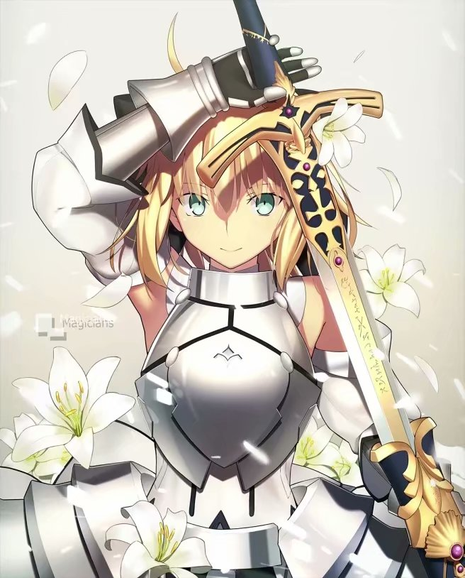
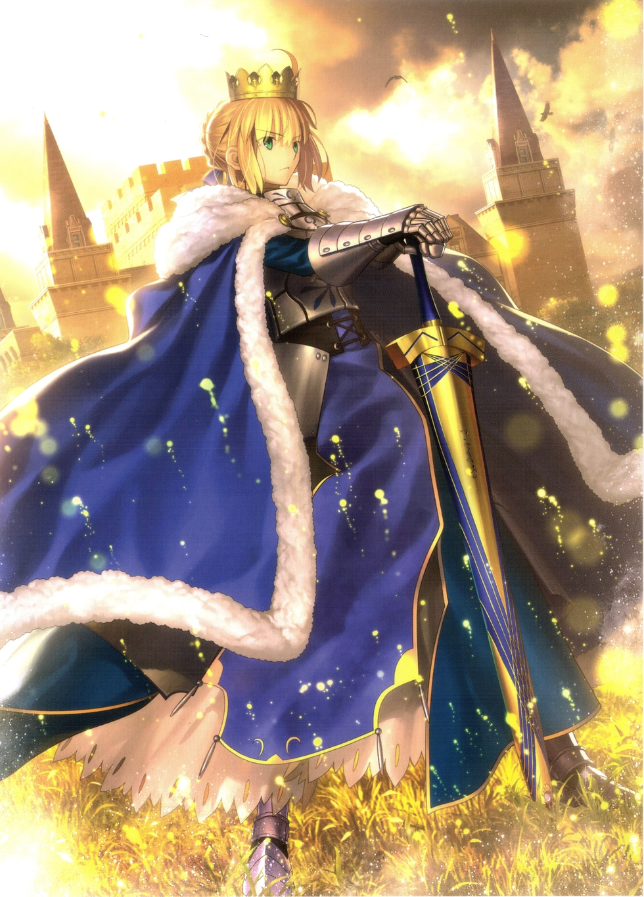
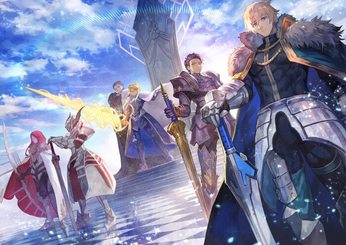
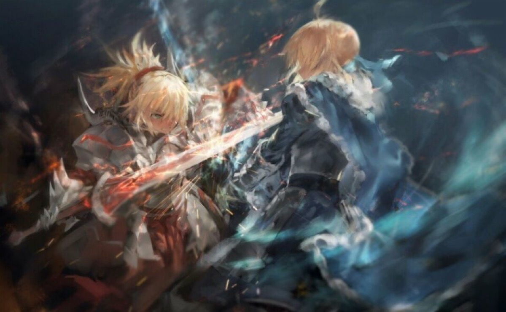
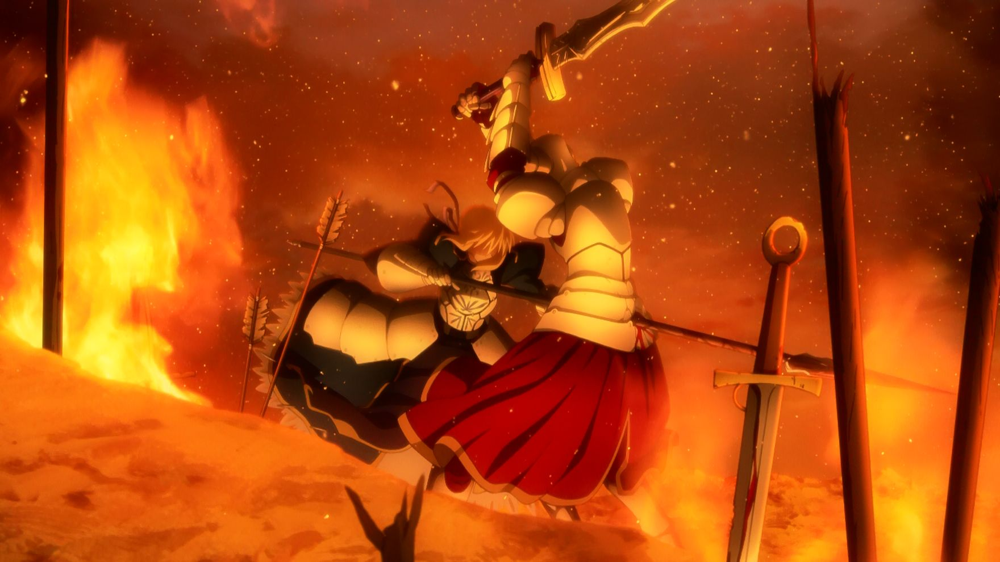

Fate Grande Order
阿尔托莉雅·潘德拉贡
去底部
阿尔托莉雅
阿尔托利亚·潘德拉贡
日本文字冒险游戏《Fate/stay night》及其衍生作品中的主要角色
Fate线的女主角，身份为古不列颠传说中的亚瑟王(原型)
她因有圣剑Excalibur的传承
在第四、五次圣杯战争中一直以“Saber”职阶被召唤到现世。


童年时光:尤瑟·潘德拉贡，不列颠尼亚诸侯之一,与他的御用魔术师「梅林」计划创造出一个天生就超脱于凡人之上的新王,
他们将不列颠王的血统、不列颠化身赤龙的意识形态、以及用以完 美融合两者的尊贵的女性血统，混合创造母胎。
这样，传说中的亚瑟王——阿尔托莉雅·潘德拉贡，悄无声息地诞生了。
阿尔托莉雅一天大部分时间都是在进行着身为王的教育，即使在每天仅有的三个小时的睡眠之中，也被梅林灌输着王的教诲。

继承王位:阿尔托莉雅十五岁时，父亲尤瑟·潘德拉贡去世。
根据梅林的寓言，骑士们希望在国家教堂墓园中以拔取石中剑的形式来选任新国王。
阿尔托莉雅仿佛理所当然一般拔出了那把「必胜黄金之剑」(Calibur)。
即刻起，时光长河便为王而冻结，王的身体和容颜停止了成长和衰老，永驻在十五岁的那一刻。

骑士之王:王的不朽形象被大多数人视为神圣的象征。
战场上，王率领着兰斯洛特、高文等骑士，建立了无数功勋。王的战斗姿态仿佛是战争之神所精心挥墨创作出来的艺术品。
在一次战斗中，因为违背了骑士精神，王的佩剑「石中剑」折断。
梅林把她带到一个圣湖旁，得到了湖中精灵赠送的圣剑——「誓约胜利之剑」(Excalibur)。
梅林告诉她，至少在任何时刻也要保存圣剑之鞘，但后来还是不慎被窃了。

叛逆骑士:一位自称王的「儿子」（实为摩根勒菲用王的基因所创造出的人造人）——名为「莫德雷德」的骑士出现在阿尔托莉雅的面前。
有一天，她摘下自己的头盔，露出了那张与阿尔托莉雅颇为相似的脸颊，告知了自己的身世，并宣称自己的继承权。
王始终以大局为重，她在自己出征期间将守护王国的重任委托给了莫德雷德，希望通过这种行为感化这位顽固的圆桌骑士。
有其他两位圆桌骑士高文和凯的坐镇，王对王国的安危也很放心。
为了解决王国内的饥荒问题，王带兵远征罗马，但她没想到坐镇王国的圆桌骑士凯会私自外出

崩溃灭亡:莫德雷德辜负了王的信任，她对于王的爱有多炽热，随之转变而成的恨就有多强烈。
她认为「父王」不承认自己这个「儿子」，是将对摩根的不满迁怒到自己的身上。
就这样，一个天大的误会就此形成，而摩根的阴谋也顺利展开。
莫德雷德在摩根的怂恿下，趁机带兵叛乱，那些心存不轨的诸侯领主们也纷纷加入了莫德雷德的麾下。
从罗马远征回归的王早已筋疲力尽，自身实力十不存一，在剑栏之战中，她与莫德雷德两败俱伤
曾经的首席骑士兰斯洛特带兵前来救王，但为时已晚，这位圆桌骑士也因此悔恨一生。
当她的一切努力与付出尽数付诸东流，不列颠在内战中惨烈灭亡、人民死伤殆尽的事实摆在面前，她根本无法接受这样的结局。
将死之际，她与「世界」阿赖耶定下契约，即使付出永堕轮回的代价，也渴望得到圣杯许下愿望
「重回选王之日」

友情链接 ： FGO手游官方 丨 宣传视频
返回顶部 丨 联系我们